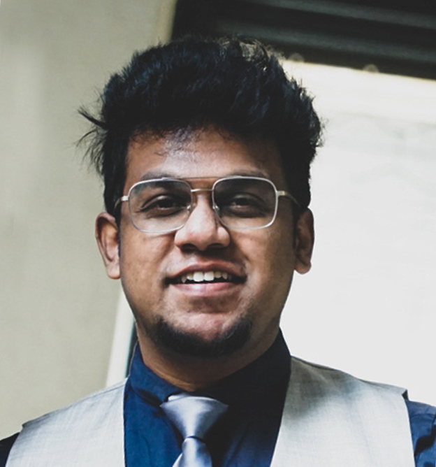

Ravi Kiran S
Software Engineer
+91 81973
09003 | ravikiran2236@gmail.com | Bengaluru,
Karnataka
Focused Software Developer with experience across Developing,
Scripting, Data Management and Design Architecture. Integrates
practical full-stack engineering knowledge for enhanced
Tech Stack
Development: .Net, Java, WPF, ReactJS
Visual Studio, VSCode, IntelliJ, Julia
Test : Smarts Automation, HP Quality Center
Databases: SQL
Education
Ramaiah Institute of Technolgy, Bangalore | India
M.Tech in Software Engineering, June 2019 - August 2021
Ramaiah Institute of Technolgy, Bangalore | India
B.E in Information Science and Technology, June 2016 - August 2019
Projects
Renumeration Systems for Ramaiah Institute of technology
Worked on multiple UI and design
DOS Attack Detection
Worked as a designer, Frontend and Backend algorithms
SAML Verifier
Generated SAML tokens and written scripts to verify protocols using third party libraries
Certifications
Certified in Android Programming - PASCAL
Learning Python - Udemy
Machine Learning - Udemy
React.Js - Udemy